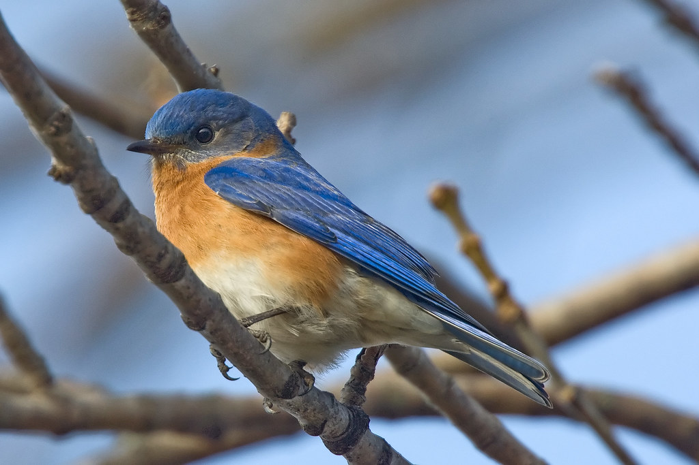

So you’re interested in birding in Missouri? Well, you’ve come to the right place! This site serves as a go-to guidebook for both beginner and seasoned birders — it encourages you to explore the great sights and sounds of Missouri. Here you’ll find a collection of helpful tips, links to resources, birds and trails you should definitely check out. If you’re still not sure what a birder is, we’ve got you covered too! This guidebook is designed to introduce birders to the diverse birds and habitats Missouri is home to. This page is especially helpful for whether you’re in need of a quick rundown or a refresher on birding essentials before you head out the door — So, check out the tips below! I hope you add them to your ever-growing toolkit! Welcome to Missouri’s birding community!
